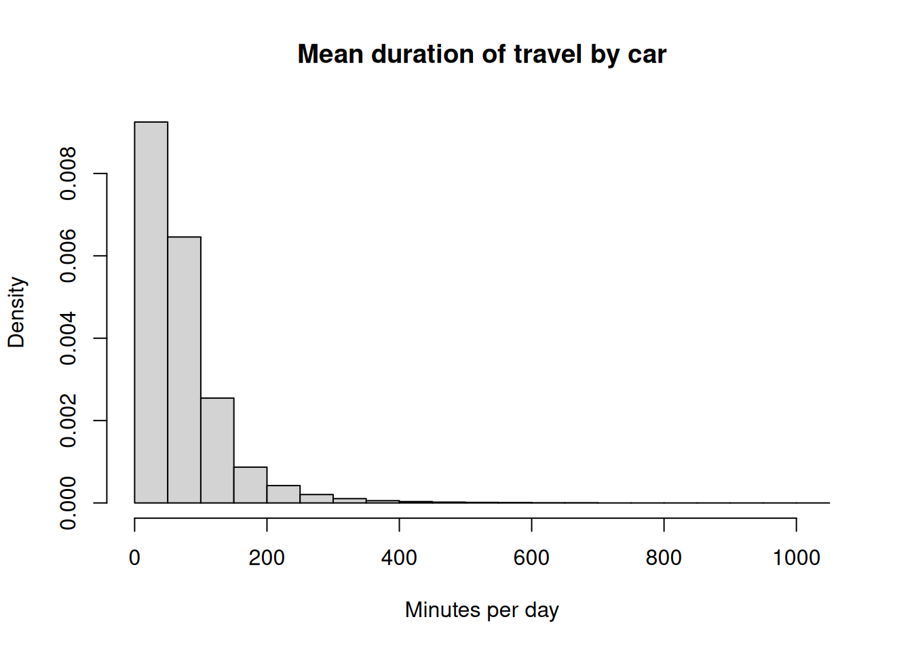
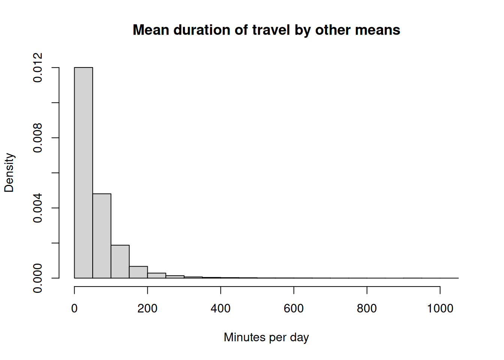
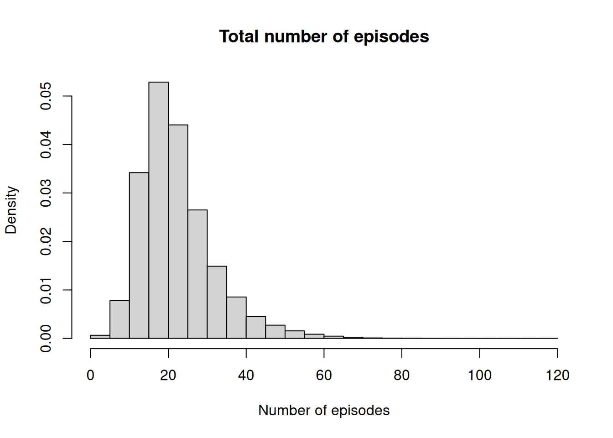
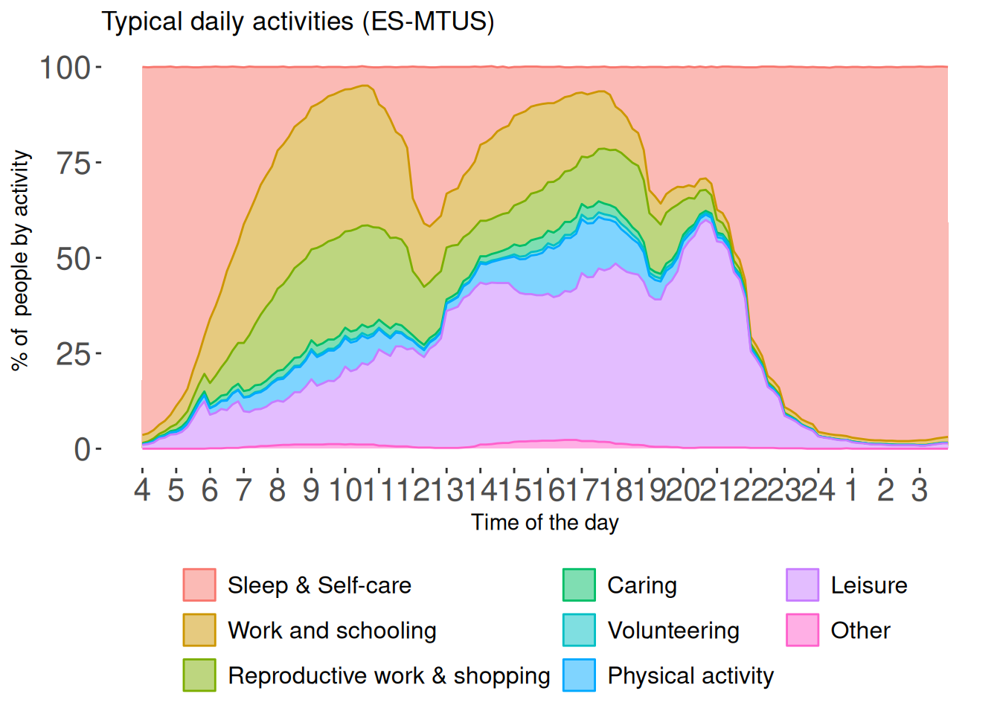
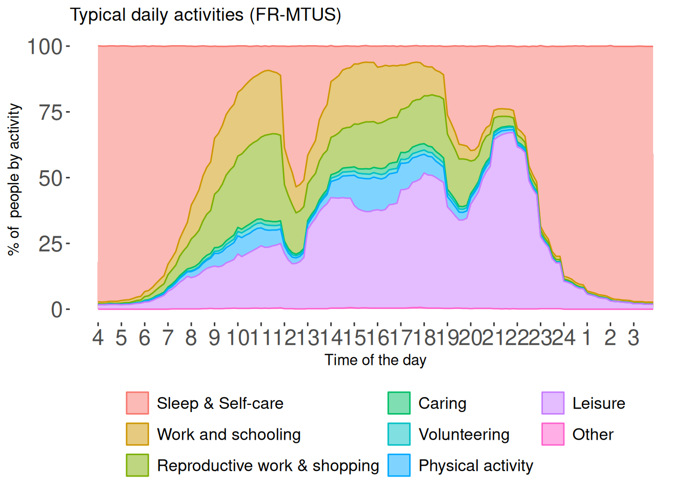
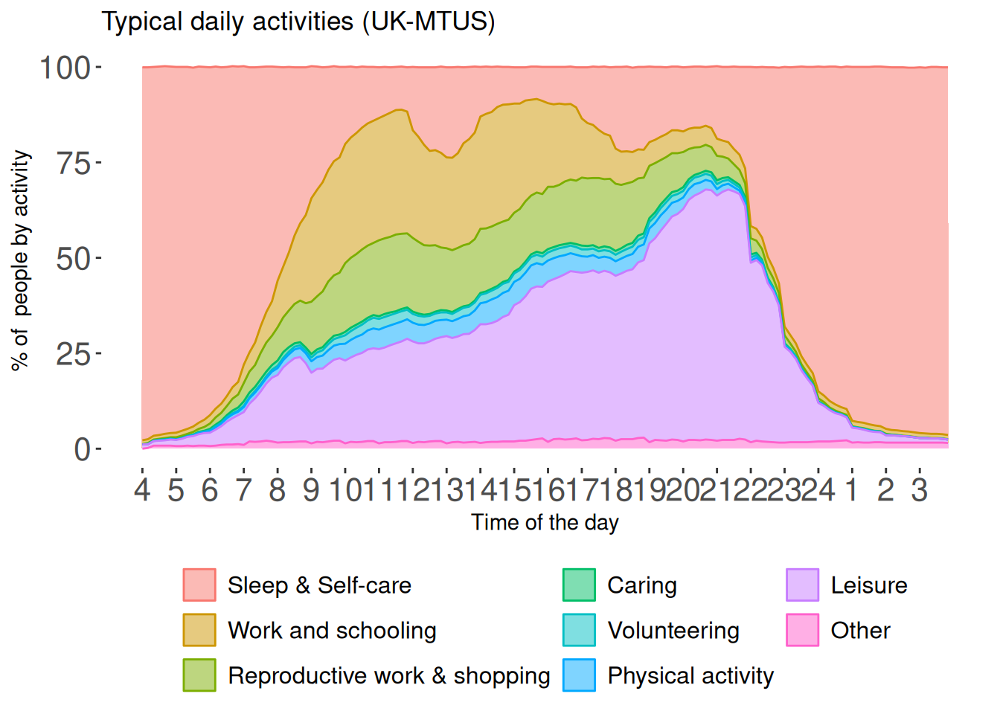

Day 2 Workbook
1. Analysing modes of travel
Let’s open the episode and aggregate (day level) files as we did last week
As before we create the STUDY variable to make our life easier:
This time, we are going to look at modes of travel. In the MTUS, travelling is coded by reason for travel
| Code | Category | Activity Description |
|---|---|---|
| 62 | Travel (18) | no activity, recorded travel mode or change of location |
| 63 | Commute (17) | travel to or from work |
| 64 | Commute (17) | education-related travel |
| 65 | Travel (18) | travel for voluntary/civic/religious activity |
| 66 | Travel (18) | child/adult care-related travel |
| 67 | Travel (18) | travel for shopping, personal or household care |
| 68 | Travel (18) | travelling for other purposes |
We are also going to use MTRAV: mode of travel
| Code | Label |
|---|---|
| 01 | Travel by car etc |
| 02 | Public transport |
| 03 | Walk / on foot |
| 04 | Other physical transport |
| 05 | Other/unspecified transport |
Using the same method as last time, we create a variable flagging travel for any reason (MTUS codes 62 to 68) undertaken either by car (MTRAV = 1) or any other mean. Note the same approach may be used to exploit information about location or copresence in any estimates of duration.
trc.t stores the time spent travelling by car… And trc.o, by any other mean…
We can then compute the aggregate duration of travel by car and other means for each day.
Let’s have a quick look at the estimates


# A tibble: 1 × 2
car oth
<dbl> <dbl>
1 39.4 22.4We can also examine the mean and median duration of car journeys vs journeys by other means of transport accross countries. Spain seems to be an outlier, with fewer car journeys (duration=0) than other countries. The US have the longest daily duration of car journeys, whereas the Netherlands have the longest duration of non car journeys, perhaps due the importance of travel by bicycle in the country. We should remain cautious as these ar unweighted estimates, likely to be significantly biased.
# A tibble: 5 × 5
study `Car (mean)` `Car (median)` `Other (mean)` `Other (median)`
<chr> <dbl> <dbl> <dbl> <dbl>
1 ES 2009 29.6 0 27.5 10
2 FR 2009 41.6 20 18.2 0
3 NL 2000 39.4 15 31.7 0
4 UK 2014 40.0 20 27.2 0
5 US 2012 48.8 30 8.36 0Similarly, one can compute the probability of travelling by car vs other means of transport by country.
Please not that strictly speaking these are probabilities that a journey undertaken on a given day involves a car or other means of transport. NOT the probability for someone to travel by car/other means.
# A tibble: 5 × 3
study prc pro
<chr> <dbl> <dbl>
1 ES 2009 0.42 0.53
2 FR 2009 0.53 0.26
3 NL 2000 0.51 0.44
4 UK 2014 0.56 0.47
5 US 2012 0.69 0.16… As well as looking at differences by gender as we did previously, we need to add the daily totals from the episode dataset to the dataset that contains person-level information: here, the aggregate dataset d.
Let’s recreate a more explicit gender variable as before:
And finally we produce the median estimates of travel duration by gender. We can also compute the ratio between the two. There are interesting gender differences, with men spending more time travelling by car than women across the board in Spain, France and the Netherlands. In most cases people spend more time overall travelling by other means (likely walking) than car, except, for the US.
Everyone…
# A tibble: 10 × 5
# Groups: study [5]
study gender Car Other `Ratio other/car`
<chr> <fct> <dbl> <dbl> <dbl>
1 ES 2009 Male 36.5 25.8 0.705
2 ES 2009 Female 23.6 29.0 1.23
3 FR 2009 Male 47.0 18.2 0.388
4 FR 2009 Female 37.0 18.2 0.491
5 NL 2000 Male 44.0 28.3 0.643
6 NL 2000 Female 36.2 34.0 0.939
7 UK 2014 Male 42.7 27.6 0.646
8 UK 2014 Female 37.7 26.9 0.714
9 US 2012 Male 53.8 9.70 0.180
10 US 2012 Female 44.9 7.28 0.162… And participants only:
# A tibble: 10 × 3
# Groups: study [5]
study gender Car
<chr> <fct> <dbl>
1 ES 2009 Male 72.8
2 ES 2009 Female 67.1
3 FR 2009 Male 82.4
4 FR 2009 Female 75.9
5 NL 2000 Male 81.5
6 NL 2000 Female 74.7
7 UK 2014 Male 76.2
8 UK 2014 Female 67.0
9 US 2012 Male 74.3
10 US 2012 Female 68.0# A tibble: 10 × 3
# Groups: study [5]
study gender Other
<chr> <fct> <dbl>
1 ES 2009 Male 50.9
2 ES 2009 Female 53.0
3 FR 2009 Male 71.5
4 FR 2009 Female 69.3
5 NL 2000 Male 74.8
6 NL 2000 Female 71.3
7 UK 2014 Male 59.1
8 UK 2014 Female 56.3
9 US 2012 Male 53.9
10 US 2012 Female 47.82. Weighting and data quality
In general, weighted estimates from time diary data are obtained using the same functions as with other surveys, using the R survey package. These should be preferred as they provide a greater control over the computation of both point estimates and their precision (ie confidence intervals and/or standard errors). It is also possible to use ad hoc (ie command -specific) weighting in some functions from other packages, such as for example wtd.mean() and wtd.var from the Hmisc packages. These will not be explored in details here.
Distribution of days with and without diary weights…
This is a bit more complicated in the case of MTUS than with single country surveys due to the fact that individual studies each tend to have their own design.
day
country 1 2 3 4 5 6 7
ES 20.0 10.3 10.4 9.8 10.1 20.3 19.2
FR 23.6 11.2 10.6 10.8 10.4 10.5 22.9
NL 14.3 14.3 14.3 14.3 14.3 14.3 14.3
UK 24.6 9.8 10.1 9.7 10.3 10.3 25.3
US 25.8 9.7 9.8 9.5 10.2 9.9 25.1After applying the diary weights, the distribution of days has become roughly balanced. PROPWT is the diary weight
day
country 1 2 3 4 5 6 7
ES 14.3 14.3 14.3 14.3 14.3 14.3 14.3
FR 14.9 14.3 14.2 14.0 14.2 14.1 14.3
NL 14.3 14.3 14.3 14.3 14.3 14.3 14.3
UK 14.9 14.5 14.2 14.0 14.2 13.9 14.3
US 14.3 14.3 14.3 14.3 14.3 14.3 14.3Note that due to the heterogeneity in the survey design of the studies in the MTUS dataset, the weights do not compensate for month of the year.
month
country 1 2 3 4 5 6 7 8 9 10 11 12
ES 0.0 25.6 0.0 0.0 25.9 0.0 0.0 25.1 0.0 0.0 23.3 0.0
FR 5.1 8.3 9.3 9.4 9.6 9.9 8.9 6.3 10.4 8.3 7.4 7.1
NL 0.0 0.0 0.0 0.0 0.0 0.0 0.0 0.0 0.0 100.0 0.0 0.0
UK 9.5 8.8 8.0 8.2 7.3 9.3 7.5 6.9 6.7 12.8 10.1 5.0
US 11.0 7.8 8.2 8.7 7.9 8.0 8.7 7.3 8.2 8.6 7.8 7.9Weighting the distribution of days and months: UK TUS 2014/15
Another illustration of diary weights is provided by the UKTUS 2015. We first load the dataset (this time a time-slot dataset in wide format, with therefore one line per day). This dataset is available to UK-based users registered with the UK Data Service. It will not be shared as part of this training course
DIA_WT_A is the diary weight. DiaryDay_Act is the day the diary was actually recorded (not necessarily the same as the randomly allocated day).
DiaryDay_Act
1 2 3 4 5 6 7
25.0 9.4 10.3 9.8 10.2 10.3 24.9 DiaryDay_Act
1 2 3 4 5 6 7
14.3 14.3 14.3 14.3 14.3 14.3 14.3 By contrast with the MTUS, the UK TUS 2014-15 also compensates for month of the year:
Computing weighted durations
Let’s use the data from the earlier exercise to compute weighted durations, first for the full sample.
gender study trc.d ci_l ci_u
Male.ES 2009 Male ES 2009 37.4 36.2 38.6
Female.ES 2009 Female ES 2009 23.6 22.6 24.5
Male.FR 2009 Male FR 2009 48.1 46.9 49.4
Female.FR 2009 Female FR 2009 37.2 36.2 38.3
Male.NL 2000 Male NL 2000 43.6 41.8 45.3
Female.NL 2000 Female NL 2000 34.7 33.5 35.9
Male.UK 2014 Male UK 2014 43.6 42.0 45.3
Female.UK 2014 Female UK 2014 37.6 36.3 38.9
Male.US 2012 Male US 2012 57.1 55.1 59.2
Female.US 2012 Female US 2012 47.7 46.0 49.3 gender study tro.d ci_l ci_u
Male.ES 2009 Male ES 2009 26.9 25.9 27.9
Female.ES 2009 Female ES 2009 30.6 29.6 31.5
Male.FR 2009 Male FR 2009 19.0 18.0 19.9
Female.FR 2009 Female FR 2009 19.2 18.4 20.0
Male.NL 2000 Male NL 2000 30.6 29.0 32.2
Female.NL 2000 Female NL 2000 34.6 33.3 35.9
Male.UK 2014 Male UK 2014 29.1 27.6 30.6
Female.UK 2014 Female UK 2014 28.4 27.1 29.8
Male.US 2012 Male US 2012 11.0 9.7 12.3
Female.US 2012 Female US 2012 7.8 6.7 8.8 gender study trc.d ci_l ci_u
Male.ES 2009 Male ES 2009 72.2 70.5 73.9
Female.ES 2009 Female ES 2009 66.3 64.5 68.1
Male.FR 2009 Male FR 2009 82.0 80.3 83.8
Female.FR 2009 Female FR 2009 74.3 72.7 75.9
Male.NL 2000 Male NL 2000 80.8 78.5 83.2
Female.NL 2000 Female NL 2000 73.9 72.0 75.7
Male.UK 2014 Male UK 2014 76.5 74.2 78.9
Female.UK 2014 Female UK 2014 65.7 64.0 67.5
Male.US 2012 Male US 2012 74.0 71.7 76.4
Female.US 2012 Female US 2012 67.6 65.6 69.7 gender study tro.d ci_l ci_u
Male.ES 2009 Male ES 2009 52.5 50.9 54.2
Female.ES 2009 Female ES 2009 54.2 52.9 55.5
Male.FR 2009 Male FR 2009 71.9 69.3 74.6
Female.FR 2009 Female FR 2009 69.3 67.1 71.5
Male.NL 2000 Male NL 2000 76.5 73.6 79.5
Female.NL 2000 Female NL 2000 71.5 69.4 73.6
Male.UK 2014 Male UK 2014 60.3 57.7 62.9
Female.UK 2014 Female UK 2014 57.1 54.8 59.3
Male.US 2012 Male US 2012 53.4 47.9 58.9
Female.US 2012 Female US 2012 44.7 39.5 50.0Inspecting episodes in long format datasets
Let us go back to the MTUS. Remember, this is what a full diary looks like:
country survey hldid persid id day year time clockst start end epnum main
1 ES 2009 1 1 1 1 2010 240 6.0 0 240 1 2
2 ES 2009 1 1 1 1 2010 20 10.0 240 260 2 6
3 ES 2009 1 1 1 1 2010 10 10.2 260 270 3 4
4 ES 2009 1 1 1 1 2010 30 10.3 270 300 4 4
5 ES 2009 1 1 1 1 2010 30 11.0 300 330 5 20
6 ES 2009 1 1 1 1 2010 90 11.3 330 420 6 43
7 ES 2009 1 1 1 1 2010 30 13.0 420 450 7 68
8 ES 2009 1 1 1 1 2010 30 13.3 450 480 8 18
9 ES 2009 1 1 1 1 2010 30 14.0 480 510 9 6
10 ES 2009 1 1 1 1 2010 30 14.3 510 540 10 59
11 ES 2009 1 1 1 1 2010 60 15.0 540 600 11 2
12 ES 2009 1 1 1 1 2010 120 16.0 600 720 12 59
13 ES 2009 1 1 1 1 2010 10 18.0 720 730 13 59
14 ES 2009 1 1 1 1 2010 140 18.1 730 870 14 43
15 ES 2009 1 1 1 1 2010 10 20.3 870 880 15 68
16 ES 2009 1 1 1 1 2010 40 20.4 880 920 16 18
17 ES 2009 1 1 1 1 2010 50 21.2 920 970 17 6
18 ES 2009 1 1 1 1 2010 100 22.1 970 1070 18 59
19 ES 2009 1 1 1 1 2010 370 23.5 1070 1440 19 2
20 ES 2009 1 2 1 1 2010 240 6.0 0 240 1 2
sec eloc mtrav alone child sppart oad study trc.t tro.t trc.d tro.d
1 69 2 -7 0 0 0 0 ES 2009 0 0 0 40
2 69 2 -7 0 0 1 0 ES 2009 0 0 0 40
3 69 2 -7 1 0 0 0 ES 2009 0 0 0 40
4 69 2 -7 1 0 0 0 ES 2009 0 0 0 40
5 69 2 -7 1 0 0 0 ES 2009 0 0 0 40
6 62 9 -7 0 0 1 0 ES 2009 0 0 0 40
7 69 8 3 0 0 1 0 ES 2009 0 30 0 40
8 48 2 -7 0 0 0 0 ES 2009 0 0 0 40
9 48 2 -7 0 0 1 0 ES 2009 0 0 0 40
10 48 2 -7 0 0 1 0 ES 2009 0 0 0 40
11 69 2 -7 0 0 0 0 ES 2009 0 0 0 40
12 48 2 -7 0 0 1 0 ES 2009 0 0 0 40
13 69 2 -7 0 0 1 0 ES 2009 0 0 0 40
14 62 9 -7 0 0 1 0 ES 2009 0 0 0 40
15 69 8 3 0 0 1 0 ES 2009 0 10 0 40
16 48 2 -7 0 0 0 0 ES 2009 0 0 0 40
17 48 2 -7 0 0 1 0 ES 2009 0 0 0 40
18 48 2 -7 0 0 1 0 ES 2009 0 0 0 40
19 69 2 -7 0 0 0 0 ES 2009 0 0 0 40
20 69 2 -7 0 0 0 0 ES 2009 0 0 0 40Now we compute the number of episodes per person per day:
Most diaries have between 15 and 25 episodes.
1 2 3 4 5 6 7 8 9 10 11 12 13 14 15 16
39 31 35 28 150 224 399 605 897 1285 1806 2359 3007 3609 4179 4477
17 18 19 20 21 22 23 24 25 26 27 28 29 30 31 32
4575 4763 4727 4586 4463 4124 3856 3572 3250 2956 2510 2271 2060 1793 1618 1467
33 34 35 36 37 38 39 40 41 42 43 44 45 46 47 48
1297 1091 1036 939 818 746 648 582 516 410 372 329 335 272 266 252
49 50 51 52 53 54 55 56 57 58 59 60 61 62 63 64
224 180 171 139 132 134 102 98 78 75 68 57 38 48 46 40
65 66 67 68 69 70 71 72 73 74 75 76 77 78 79 80
32 22 22 23 18 15 12 10 7 8 6 8 4 5 2 3
81 82 83 84 85 86 87 88 89 91 93 101 112 116
6 3 1 2 2 2 1 1 1 1 1 1 1 1 
Diaries with less than 7 episodes:
More than 80% of diaries have 15 episodes recorded or more:
UK diaries have the largest number of episodes recorded on average.
3. Plotting tempograms with MTUS data
Overview
This section demonstrates how to convert an MTUS episode dataset (in long format) into a time slot file with 144 observations per day and subsequently use it to plot simple tempograms. This is achieved by applying the function uncount() from the tidyr package, then creating a slot number ie index variable in order to make sure that all diary days have 144 observations. Unpack() requires a count variables which determines the number of slots into which to ‘unpack’ episodes: we will using episode duration/10.
We first need to perform some quality checks. In order to do this, we create MINEP (number of first episode in each diary), MAXEND (number of episodes in the diary), and SUMTIME, total number of minutes reported in the diary. Due to issues with diary resolution, data from the Netherlands and the US will not be used.
ep.m<-ep|>
filter(study=="UK 2014" | study=="FR 2009"| study=="ES 2009" & (day>1 & day<7))|>
group_by(study,hldid,persid,id)|>
mutate(minep=min(epnum),maxep=max(epnum),sumtime=sum(time),maxend=max(end))|>
ungroup()
ep.m<-merge(
ep.m,d|>select(study,hldid,persid,id,propwt),
by=c("study","hldid","persid","id"),
all.x = T,all.y = F
)We have quite a few diaries that do not begin with episode number 1, especially in the UK.
1 2 3 4 5 6 7 8 9 10
1177243 6509 1247 1410 917 883 614 766 552 535
11 12 13 14 15 16 17 18 19 20
434 210 194 91 82 61 56 40 38 42
21 22 23 24 25 26 27 28 29 30
12 35 14 60 11 15 8 39 13 41
31 32 33 34 35 36 37 38 39 40
35 6 24 27 16 3 50 13 14 11
41 42 43 44 45 47 48 49 51 57
22 5 1 25 17 16 4 15 5 1
58 59 61 64
1 1 11 3
ES FR UK
FALSE 0.1 0.2 3.0
TRUE 99.9 99.8 97.0We also have a large number of diaries whose total reported time is different from 1440 minutes….
Min. 1st Qu. Median Mean 3rd Qu. Max.
10 1440 1440 1380 1440 1440 country
sumtime == 1440 ES FR UK
FALSE 22.2 36.7 15.6
TRUE 77.8 63.3 84.4… And a smaller number with the last episode not ending at the 1440th minute.
ep.m$maxend
n missing distinct Info Mean pMedian Gmd .05
1192498 0 119 0.027 1437 1440 6.896 1440
.10 .25 .50 .75 .90 .95
1440 1440 1440 1440 1440 1440
lowest : 60 150 180 190 210, highest: 1400 1410 1420 1430 1440 country
maxend == 1440 ES FR UK
FALSE 0.1 0.0 1.2
TRUE 99.9 100.0 98.8All in all, we need to drop between 15 and 40% of diaries.
country
minep == 1 & sumtime == 1440 & maxend == 1440 ES FR UK
FALSE 22.2 36.7 15.6
TRUE 77.8 63.3 84.4We can then create the time slot dataset.
… Then compute and examine the number of slots by diary by country.
# A tibble: 6 × 33
study hldid persid id country survey day year time clockst start
<chr> <dbl+lb> <dbl> <dbl> <chr> <dbl> <dbl+l> <dbl> <dbl> <dbl> <dbl>
1 ES 2009 10 1 1 ES 2009 6 [Fri… 2009 190 6 0
2 ES 2009 10 1 1 ES 2009 6 [Fri… 2009 190 6 0
3 ES 2009 10 1 1 ES 2009 6 [Fri… 2009 190 6 0
4 ES 2009 10 1 1 ES 2009 6 [Fri… 2009 190 6 0
5 ES 2009 10 1 1 ES 2009 6 [Fri… 2009 190 6 0
6 ES 2009 10 1 1 ES 2009 6 [Fri… 2009 190 6 0
# ℹ 22 more variables: end <dbl>, epnum <dbl>, main <dbl+lbl>, sec <dbl+lbl>,
# eloc <dbl+lbl>, mtrav <dbl+lbl>, alone <dbl+lbl>, child <dbl+lbl>,
# sppart <dbl+lbl>, oad <dbl+lbl>, trc.t <dbl>, tro.t <dbl>, trc.d <dbl>,
# tro.d <dbl>, maxep <dbl>, minep <dbl>, sumtime <dbl>, maxend <dbl>,
# propwt <dbl>, sltest <int>, slotnum <int>, maxslot <int>
144
5713056
ES FR UK
144 1311408 2537712 1863936And now for the tempogram.
lab.l<-c("Sleep & Self-care","Work and schooling","Reproductive work & shopping",
"Caring","Volunteering","Physical activity","Leisure","Other")
slot.m<-slot.m|>mutate(main.s=case_when(
main>=1& main<7 ~ lab.l[1],
main>=7& main<17 ~ lab.l[2],
main>=18& main<27 ~ lab.l[3],
main>=27& main<33 ~ lab.l[4],
main>=33& main<35 ~ lab.l[5],
main>=42& main<48 ~ lab.l[6],
(main>=35& main<41) | (main>=48& main<69) ~ lab.l[7],
main==41 | main==17 | main==69~lab.l[8] )
)
slot.m$main.s<-as.factor(slot.m$main.s)
slot.m$main.s<-factor(slot.m$main.s,levels=levels(slot.m$main.s)[c(6,8,5,1,7,4,2,3)])
tmp.r<-list()
for(c in c("ES","FR", "UK")){
tmp.r[[c]]<-matrix(nrow=1,ncol=8)
for(i in 1:144){
### Unweighted version, for reference
## tmp.r[[c]]<-rbind(tmp.r[[c]],round(100*prop.table(xtabs(~main.s,slot.m|>filter(slotnum==i & country==c)),1))
### In the weighted version the weighting variable PROPWT comes on the left hand side of the formula
tmp.r[[c]]<-rbind(tmp.r[[c]],
round(100*prop.table(xtabs(propwt~main.s,slot.m|>
filter(slotnum==i & country==c))),1))
}
tmp.r[[c]]<-data.frame(tmp.r[[c]][-1,])
names(tmp.r[[c]])<-lab.l
tmp.r[[c]]$time<-1:144
}
library(reshape2)
for(c in c("ES","FR", "UK")){
tmp.g<-melt(tmp.r[[c]],id.vars="time")
names(tmp.g)[2]<-"Activity"
tmp.g$min=230+(tmp.g$time*10)
tmp.g$min<-ifelse(tmp.g$min>1440,tmp.g$min-1440,tmp.g$min)
tmp.g$ct=paste0(floor(tmp.g$min/60),":",round(((tmp.g$min/60)-floor(tmp.g$min/60))*60))
levels(tmp.g$Activity)<-lab.l
#### Plotting the results
tmp.plot<-ggplot(tmp.g, aes(x=time,y=value))+
geom_area(aes(color=Activity,fill=Activity),alpha=0.5,position='stack')+
scale_x_continuous(name="Time of the day",breaks=c(seq(1,144,6)),labels=c(4:24,1:3))+
scale_y_continuous(name="% of people by activity ")+
ggtitle(paste0("Typical daily activities (",c,"-MTUS)"))+
#### Not strictly necessary, but makes our plot looks nice
theme(
legend.title= element_blank(),
legend.text= element_text(size=12),
legend.position="bottom",
axis.text.y= element_text(size=16),
axis.text.x= element_text(size=16),
panel.background = element_rect(fill = "transparent"),
)+
guides(colour = guide_legend(nrow = 3))
print(tmp.plot)
#ggsave(tmp.plot, filename=paste0("temp_",c,".png"),height=8,width = 12,bg = "transparent")
}

